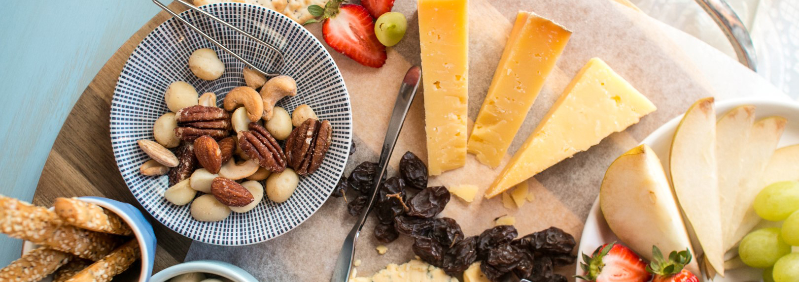

HOW BOUT SOME CHEESE WITH THAT WINE?

FOOD MENU
Appetizers
select cheeses, house-made cranberry-feta spread, fig preserves, Laurello's candied walnuts and crackers
select cheeses, roasted red peppers, Kalamata and Greek olives, Margherita pepperoni and crackers
Brie, with caramelized butter and brown sugar, topped with nuts and served with crackers
Sliced tomatoes, fresh mozzarella, drizzled with basil pesto, olive oil, balsamic glaze and served with crispy crostini
Warm, crusty bread loaves with a dipping plate of olive oil, balsamic glaze and grated parmesan cheese
Homemade warm dip served with tortilla chips.
(Seasonal) Authentic Italian recipe with eggplant, onions, green olives, celery, capers, golden raisins in a zesty tomato sauce served with crostini.
Oven-fired flatbread with gourmet toppings selected weekly.